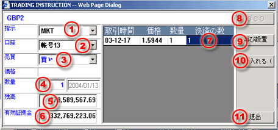

マーケットオーダー
取引パネルを通じて取引指示画面が起動した場合、以下のインフォメーションを完全にして下さい。
| 1 | タイプ - MKTをえらんで市場注文を履行するためにMKTを実行します。 |
 MKT
Order processing dialog
|
| 2 | 口座 - 注文に対する取引口座を選択します。 | |
| 3 | 売買 - 売り又は買いの注文指示を選択します。 | |
| 4 | 枚数 - 取引の為の成約枚数を入力します。 | |
| 5 | 残高 - 選定した口座の証拠金額残高のこと。 | |
| 6 | 正味証拠金 - 選定した口座の正味証拠金 | |
| 7 | 閉じる - 決済目的の取引の場合、オープン注文に一致する枚数入力してください。 | |
| 8 | オーシーオー注文 - 適用出来ません。 | |
| 9 | リセット - 終了する画面の枚数を再入力するためのボタンです。 | |
| 10 | 受ける（F8） - 取引室へその注文を発注するためのボタン。 | |
| 11 | 退去 - 引取指令画面から退去するためのボタン。 |
MKTオーダーは取引デスクと成約できたら、そのオーダーは受け入れた証拠として参考コードに変る。しかも、ワーキング注文パネルのところに不明確と言う文字が表示される。いかなる理由が関係なく、成約したまたはキャンセルしたと言う指令を実行しない限り、不明確と言う表示が消されないはずです。
注意事項